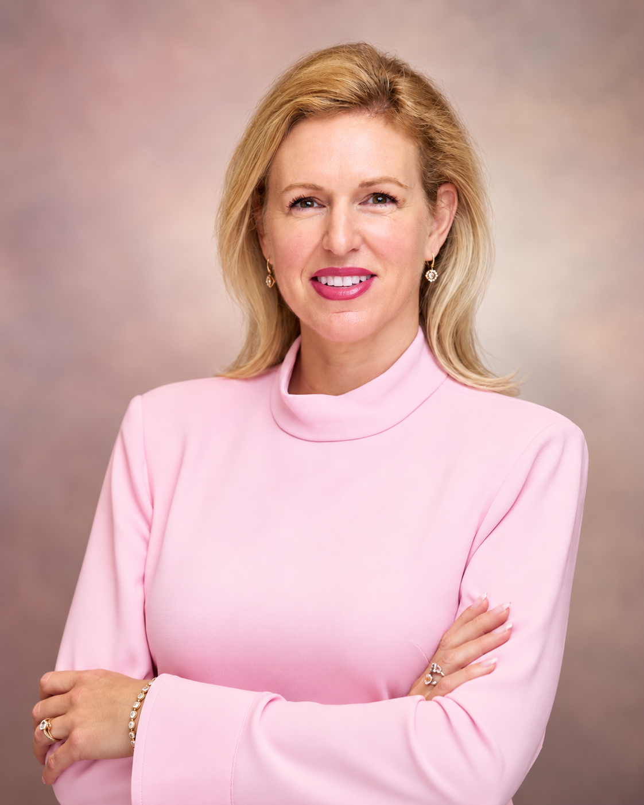

A seasoned technology executive, passionate people leader, and architect of strategic career advancement.

Senior Director, Partner Success | Salesforce
DoD RMF Certified | Agents for Impact Pro Bono Fellow | StrivingForAll.org CEAO
Justine Reilly is a seasoned technology executive and passionate people leader who brings equal parts strategic rigor and human warmth to everything she does. With a career spanning 25+ years across enterprise solution engineering, financial services architecture, and partner ecosystem development, Justine is known for building high-performing teams, driving transformational deals, and creating cultures where everyone feels valued and empowered to grow.
The RISE framework emerged from lived experience—successfully navigating multiple high-stakes internal transitions and earning both hierarchical promotions and compensation increases in environments where lateral moves are the norm.
After years of observing what separates those who advance from those who remain stuck, a clear system emerged: advancement isn't random. It's architectural.
RISE integrates principles from neuroscience, behavioral psychology, and enterprise mobility research—objectifying the "soft" aspects of advancement into a repeatable strategic process.
From Solution Engineer to Principal to Director to Senior Director—each transition required understanding not just technical excellence, but the invisible architecture of enterprise mobility.
2025 - Present
Leading partner success strategy and execution at Salesforce, focused on driving verifiable customer outcomes through the partner ecosystem in the agentic era. Forward Deployed Engineer trained and certified to implement Agentforce solutions.
2019 - 2025
Led the FINS Enterprise Architecture Trust team covering Strategic Banking, Capital Markets, and Enterprise accounts. Managed EA coverage for major clients including Morgan Stanley, Truist, PNC, and Wealthspire Advisors.
2023 - 2025
Partnered with SVP/VP solution leaders to drive and scale automation knowledge across all of MuleSoft. Led team achieving 300% growth in AMER automation sales.
2017 - 2019
Played pivotal role in Health Cloud GTM lifecycle, building relationships with senior-level stakeholders and providing high-level product overviews to increase adoption. Certified Enterprise Architect Master Class graduate.
2014 - 2017
Spearheaded the first successful Health Cloud deployment, establishing Salesforce as a competitive force within healthcare. Achieved rapid promotion from Lead to Principal Solution Engineer within one year by driving >⅓ total ACV for the Northeast.
2012 - 2014
Awarded "Most Valuable Team" recognition as leader of the K2 pre-sales team globally. Partnered with Fortune 1000 clients on BPM and automation solutions.
2010 - 2012
Created and built the global alliances team. Played pivotal role in U.S. expansion of Mendix, relocating HQ from Rotterdam to Boston and managing all teams including alliances, pre-sales, sales, and business development.
2009 - 2010
Managed full operational lifecycle of ISE's high-availability trading databases, ensuring zero downtime for mission-critical financial transactions.
2002 - 2009
Led development and testing teams to create suite of reference data STP applications for sales and trading. Spearheaded modernization of account opening software, securing a patent for innovative technology adhering to complex regulatory standards.
Spearheaded cross-functional recruiting to assemble 8–9 Agentforce SMEs for a strategic account hackathon competing head-to-head vs. OpenAI and Snowflake. Result: 715 ideas, 123 teams, 82 working demos, with 6 Salesforce-led teams advancing to present to senior leadership.
Recognized for contributions across Leadership & Results, Inclusive Culture & Belonging, and Community Leadership & Social Impact.
Selected from 350+ applicants and 120 video submissions for the Agents for Impact cohort, applying Agentic AI expertise to drive nonprofit digital transformation.
Led Automation Specialists team to achieve 300% growth in AMER automation sales.
Spearheaded the first successful Health Cloud deployment, establishing Salesforce as a competitive force within the healthcare technology space.
Organized and co-hosted Monthly REG Industry Specialist Enablement Call (450+ attendees), launched FinServ Enterprise Architecture Digest, and built reusable asset frameworks adopted across the FINS field org.
Justine leads with empathy, intention, and a deep belief in people's potential.
"Justine has this amazing way of making sure you're growing in your career while also looking out for you personally. Professionally, Justine is the ultimate resource wizard. No matter what I need to work more efficiently—whether it's tools, training, or just a sounding board—she's always got it covered. She's constantly encouraging me to keep learning and take on new challenges!"
"Justine embodies exceptional leadership, mentorship, and inclusiveness, setting an inspiring standard for her team and peers. As the manager of a high-performing team of Automation Solution Engineers, she not only drives strategic initiatives within our team and business unit but also cultivates an environment where everyone feels valued and empowered. Her ability to mentor and nurture talent has positioned her team for continuous growth and innovation, showcasing her dedication to people development and her exceptional ability to lead (both professionally and in her community) by example."
Understanding that career growth is deeply personal and requires both professional strategy and emotional support.
Connecting people with the tools, training, and networks they need to accelerate their growth.
Creating environments where everyone feels valued, empowered, and positioned for continuous innovation.
Translating complex concepts into actionable frameworks that drive measurable results.
Executive Education Programs
Leadership & Technology Programs
Neural Networks and Deep Learning (2025)
Women in Leadership Certification (2021)
Enterprise Architecture Graduate Certificate (2018)
BA in Computer Science & Business (2002)
Leadership extends beyond the workplace. Justine is deeply committed to creating opportunities and driving positive change in her community.
Chief Executive Advisor & Officer (CEAO)
Drives social impact and inclusive leadership initiatives. Spearheads fundraising efforts, secures key partnerships, and organizes global event participation to support children's healthcare and education in underserved communities.
Philanthropy Chair
Partners with Employee Resource Groups to deliver events and programming that support women in tech and advance inclusive culture initiatives across the organization.
Pro Bono Fellow
Applies Agentforce capabilities and agentic AI expertise to nonprofit transformation, helping organizations leverage technology for greater social impact.
Events Co-Lead
Connects women across career stages with Salesforce tech leaders in New York City, facilitating intimate career roundtables and networking events.
Leader, Networking & Events
Organizes impactful virtual events quarterly around career progression and in-person networking events around Dreamforce and World Tours.
NYC Event Organizer
Organizes NYC-based events to raise awareness and funds for Alzheimer's care, support, and research, creating community and sponsorship opportunities for colleagues, friends, and family.
Connect with Justine to explore how the RISE framework can transform your internal mobility strategy.
Start the Conversation